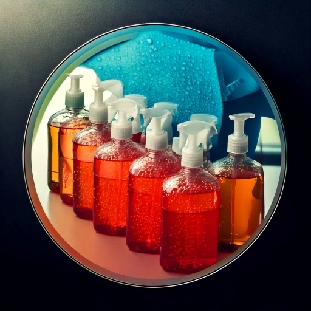

Overfølsomhed overfor vaskemidler er et almindeligt problem, som
mange mennesker oplever. Vaskemidler indeholder en række kemikalier,
der kan forårsage hudirritation, allergiske reaktioner eller andre
helbredsproblemer hos visse personer. Her er nogle af de vigtigste
punkter om overfølsomhed overfor vaskemidler
